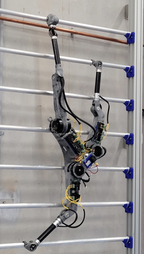

Tripedal Climbing Robot
Project Overview
This project focuses on state estimation and control of a custom-designed tripedal climbing robot. I developed and implemented an Extended Kalman Filter (EKF) that fuses IMU and encoder data to estimate body position, velocity, and orientation. These estimations are crucial for enabling real-time stability, control, and climbing in complex vertical environments.
Demonstration
The following video and image showcase the robot's climbing behavior in simulation, including trajectory tracking, orientation control, and foot placement strategies. The EKF allows the robot to maintain balance while adapting to surface curvature and external disturbances.
A physical prototype of the tripedal climbing robot was also developed to evaluate the estimation method on hardware. The image below shows the assembled robot with onboard sensors and actuators used in testing.
Core Techniques
- ✓ Developed an Extended Kalman Filter (EKF) for real-time state estimation (position, velocity, orientation)
- ✓ Fused IMU and encoder data to estimate body motion under dynamic conditions
- ✓ Designed a dynamics and kinematics model tailored to tripedal locomotion
- ✓ Simulated and visualized the robot using MATLAB and PyDrake to verify estimation results